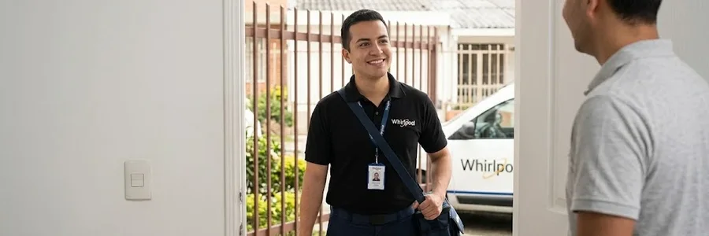
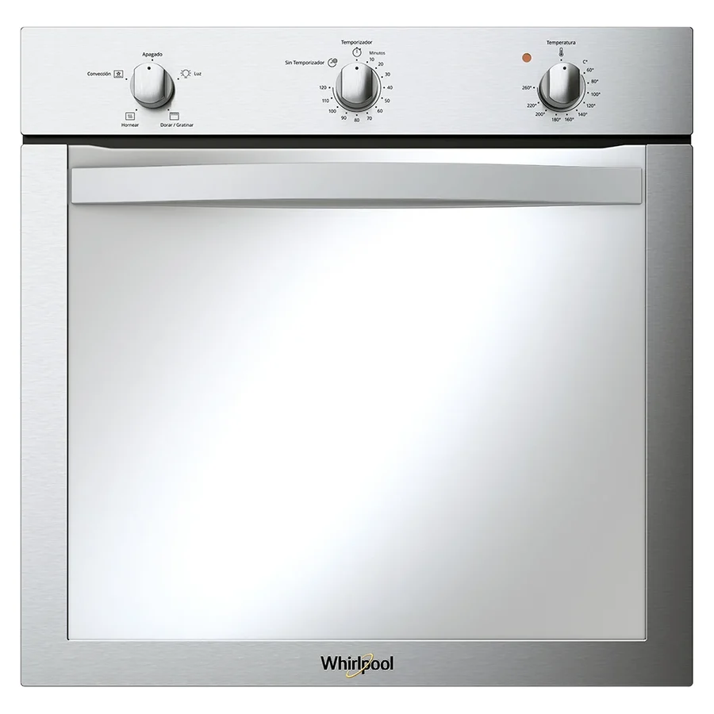

Imágenes de referencia de equipos Whirlpool.
Qué incluye
- Visita a domicilio en norte, centro, sur y valles
- Revisión del equipo donde está instalado
- Explicación de la falla y costo antes de reparar
- Reparación y prueba
Cuándo conviene
Apaga y deja enfriar siempre antes de limpiar o revisar. Si ves humo que no es de grasa o sientes olor a gas, desconecta el breaker, cierra el gas y ventila.
Equipos relacionados
Cómo pedir la visita
- Escríbenos por WhatsApp o llámanos al 099 350 8191
- Cuéntanos qué equipo es, la marca, el modelo y la falla
- Envía tu barrio y, si puedes, una foto de la etiqueta y un video corto
- Coordinamos el día y la hora de la visita
Dónde atendemos en Quito
Preguntas frecuentes
¿El técnico de hornos va a mi casa?
Sí, a domicilio en Quito. Coordinamos día y hora por WhatsApp.
¿Qué debo tener listo?
Marca, modelo y descripción de la falla; una foto de la etiqueta ayuda.
¿Cómo contacto al servicio técnico?
Por WhatsApp o llamada al 099 350 8191 (+593 99 350 8191).